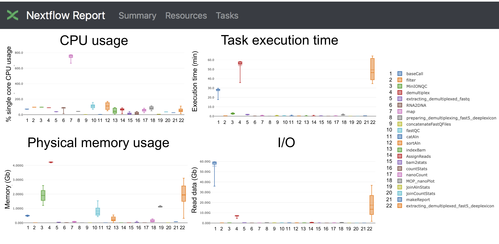
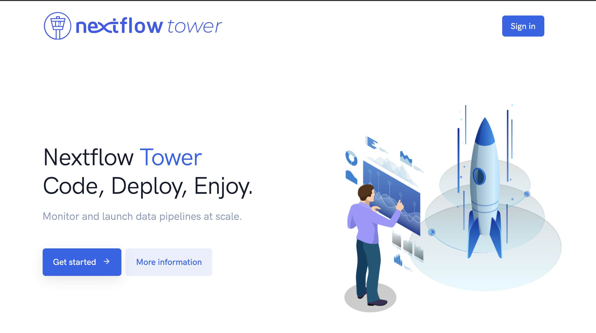
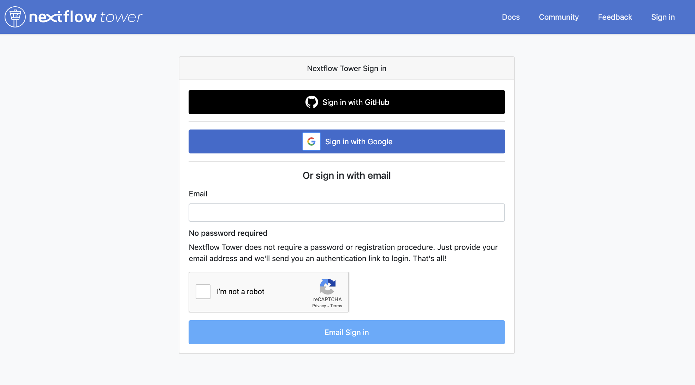
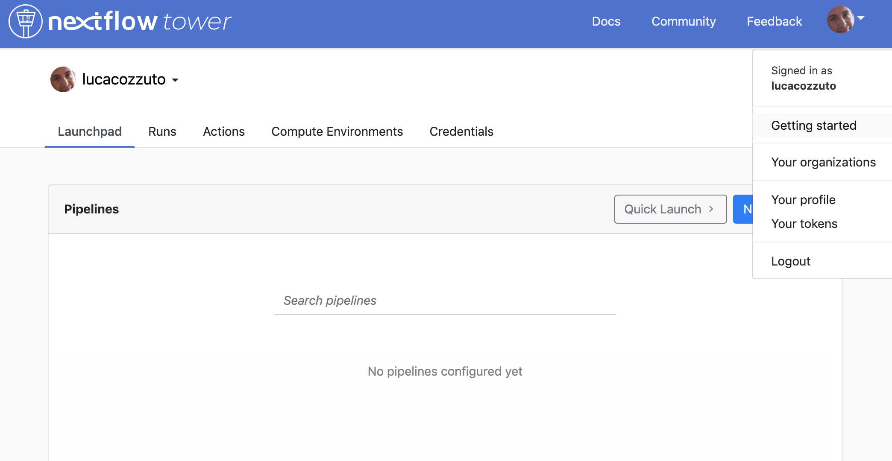

Resource reporting
Since each MOP pipeline is based on Nextflow we can use its embedded functions for reporting the use of resources as a html file and to have a live reporting.
Html report
For enabling the generation of a report just run each pipeline with the parameter -with-report as in the following example:
nextflow run mop_preprocess.nf -profile local -with-docker -bg -with-report
Once the pipeline is finished you will have a comprehensive report with information about CPU, disk and memory usage for each execution and as a distribution for each process. Here an example:
{kind=link}
Live reporting
For having a live reporting your pipeline should run in an environment that has access to internet. Then you have to log-in to the Tower.nf website that is developed and mantained by the good people at Seqera Labs.
{kind=link}
We suggest you to use either the GitHub or the Google authentication:
{kind=link}
You can generate your token at https://tower.nf/tokens and
{kind=link}
then you can export as an environmental variable.
export TOWER_ACCESS_TOKEN=*******YOUR***TOKEN*****HERE*******
Tip
We recommend you to add this line to either your .bashrc or .bash_profile file.
Finally we can then launch the pipeline adding the parameter -with-tower.
nextflow run mop_preprocess.nf -profile local -with-docker -bg -with-tower
Going back to the website you can see now your pipeline running and have a nice looking live reporting.